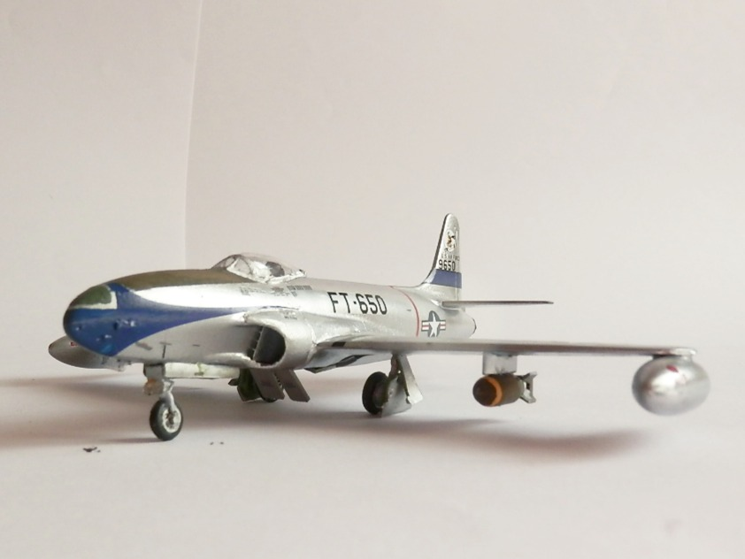
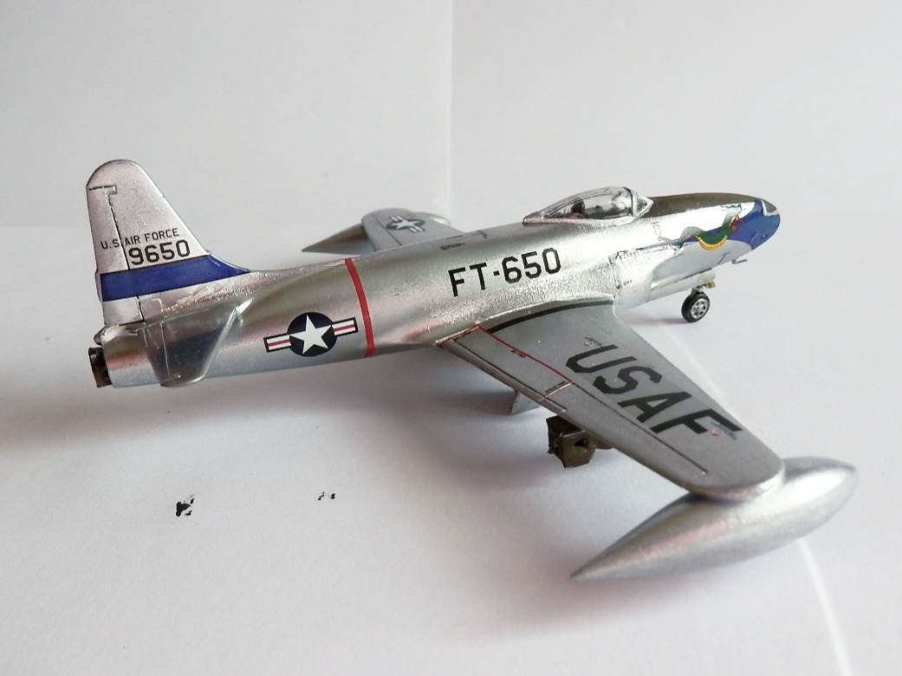
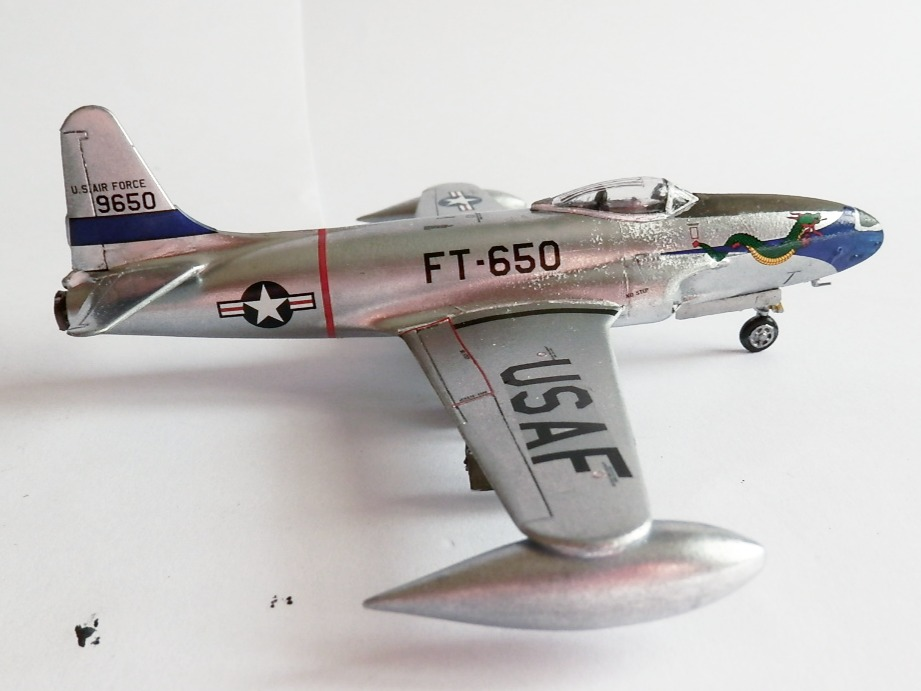
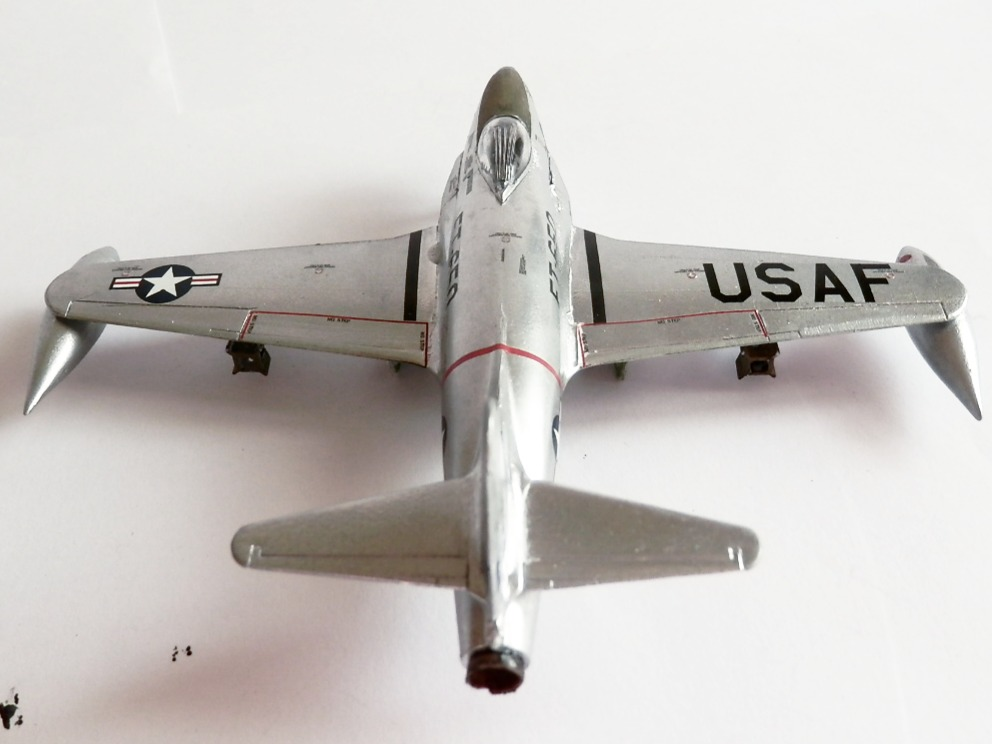

Aerei · scale model archive
Lockheed P80 Shooting Star
Lockheed P80 Shooting Star — Kit: Airfix, Scale: 1/72. 16 FIS, 51 FIW FT-650 / 9650 Saggin Dragon 1951 - Suwon AB KR Wonderful Airfix box artwork

Photo gallery



English description
16 FIS, 51 FIW FT-650 / 9650 Saggin Dragon 1951 - Suwon AB KR
Wonderful Airfix box artwork
Descrizione italiana
16 FIS, 51 FIW, FT-650 / 9650 “Saggin Dragon”, 1951 - Suwon AB, Corea. Magnifica illustrazione Airfix sulla scatola.